consumo <- read.table(header = T, text = '
kWh custo
0 10
30 16
30 16
100 43
100 43
220 120
') # comando que cria tabela de dados7 - Gráficos mais elaborados - pacote ggplot2
O pacote ggplot2
O
R possui diversos pacotes pra criação de gráficos, dentre os quais destaca-se o ggplot2. Esse pacote permite a elaboração de um grande número de tipos (pontos, linhas, barras, histograma, etc) e com qualidade de publicação. Basicamente o ambiente funciona tal e qual um editor de imagens, como o Corel Draw ou o Canva, e que permitem a criação dessas por camadas. A única diferença é que em tais editores as camadas são depositadas ao bel prazer de seu criador. Já no
ggplot2 as camadas tem propriedades fixas. Mas o bacana é que, tanto para a edição de imagens naqueles programas, como para a edição de gráficos no
ggplot2, a alteração feita numa camada específica só altera essa, preservando as demais que “já deram certo”. À despeito dessa “aparente complicação”, segue-se um itinerário no qual cada camada é sobrepostas (com um sinal de “+”):
- Estabelece-se os dados que serão utilizados (data=);
- Define-se quem é o x e quem é o y (x=, y=);
- Seleciona-se um tipo de gráfico (geom=);
- Embeleza-se o gráfico criado (eixos, cores, símbolos, tamanhos).
Definindo o conjunto de dados
Vamos elaborar um gráfico com os dados que relacionam o consumo de energia elétrica com o custo, tal como representado no MAPA para o ensino médio (Matemática, 1o. Bimestre, 1o. Ano, p. 23, 2024), e reproduzido abaixo:
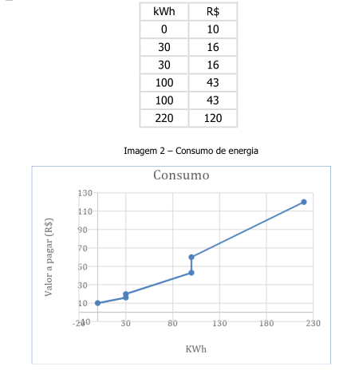
Para o
ggplot2, diferente do pacote basics, é necessário dispor os dados numa planilha. Há um bom número de formas de se conduzir isso no R, mas uma forma simples é dada abaixo (basta copiar e colar num script do R para execução: Alternativamente, pode-se criar os vetores x e y primeiro, como realizado anteriormente, e criar a planilha em seguida:
kWh <- c(0,30,30,100,100,220)
custo <- c(10,16,16,43,43,120) # define os dados
consumo <- data.frame(kWh,custo) # comando que cria a tabela de dados a partir dos vetores x e yCarregando o ggplot2
Agora é fazer o gráfico carregando a biblioteca. Nota óbvia: é preciso instalar antes a biblioteca, quer pelo RStudio como já demonstrado, ou por linha de comando. No último caso:
# install.packages("ggplot", dependencies = TRUE)
library(ggplot2)ggplot(data=consumo)
Veja que surgiu um quadro (canvas), embora apenas o quadro, mesmo, sem nenhum x ou y. O que também é óbvio, pois não definimos essas variáveis ainda. Para isso:
ggplot(data=consumo, aes(x=kWh, y=custo))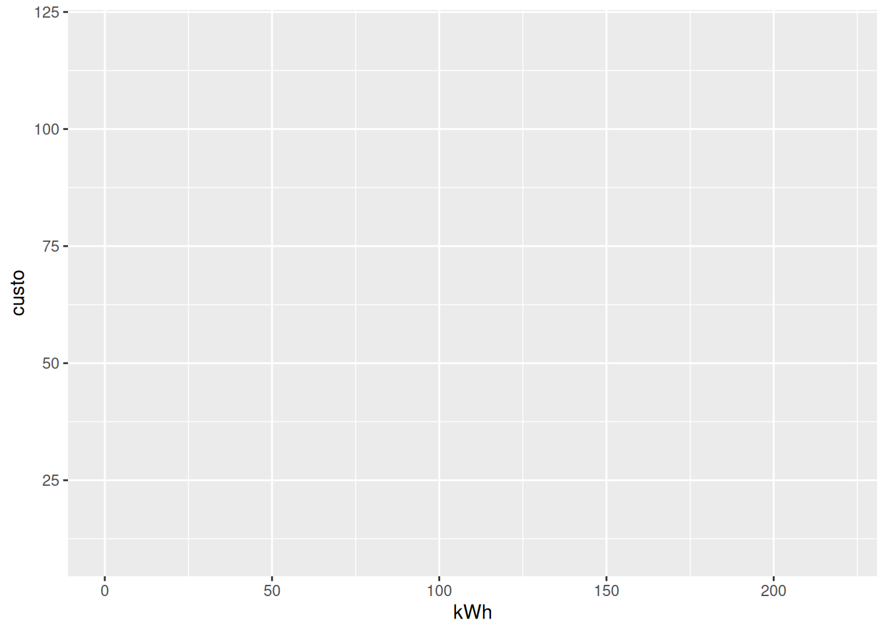
Agora o gráfico apresenta-se com os eixos, embora sem os dados da tabela. No conjunto de obviedades que se assoma, é claro, também não definimos que tipo de gráfico queremos. Ou seja, se ponto, linha, barra, ou algum pra lá de dúzia que compõe o pacote
ggplot2. Uma observação importantíssima: veja que as variáveis estão dentro de um parêntes iniciado pela função aes. Do inglês, uma abreviação de aesthetics, ou estética, em tradução livre. Todo gráfico do
ggplot2 tem que conter essa função, que além de definir as variáveis envolvidas, também permite generalizar para as camadas outras características estéticas, como cor, tamanho, e forma.Escolhendo o tipo de gráfico
De volta ao ofício, o tipo de gráfico no pacote
ggplot2 é definido pelo tipo de geom, ou geoma, em tradução livre e um pouco óbvia, também. O ggplot2 tem geoms pra tudo que é gráfico. E para inseri-lo na linha de comando de produção desse, basta acrescentar seu tipo como uma camada adicional, usando o sinal ” + “, mesmo, como segue.ggplot(data=consumo, aes(x=kWh, y=custo)) +
geom_point()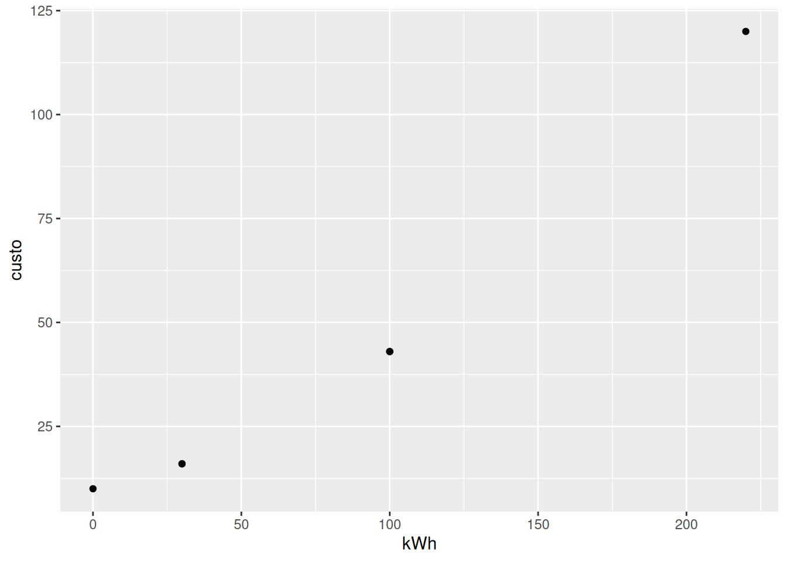
“Parfait” ! Agora, sim, quadro, dados, eixos gráficos, e pontos. Uma qualidade muito legal do
ggplot2 e, na verdade, de qualquer programa que use linhas de comando para gerar resultados, como o próprio R, é que pra gente produzir um gráfico diferente não precisa criá-lo do zero; basta alterar o ponto específico que se deseja na linha de comando. Na prática, se ao invés de produzirmos um gráfico de pontos quisermos outros tipos, é só mudar o geom:ggplot(data=consumo, aes(x=kWh, y=custo)) +
geom_line()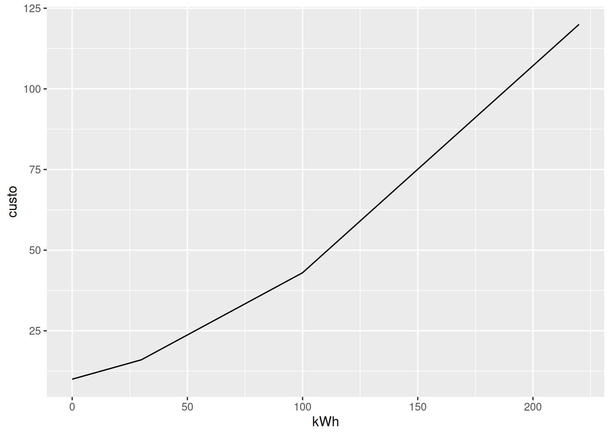
ggplot(data=consumo, aes(x=kWh, y=custo)) +
geom_col()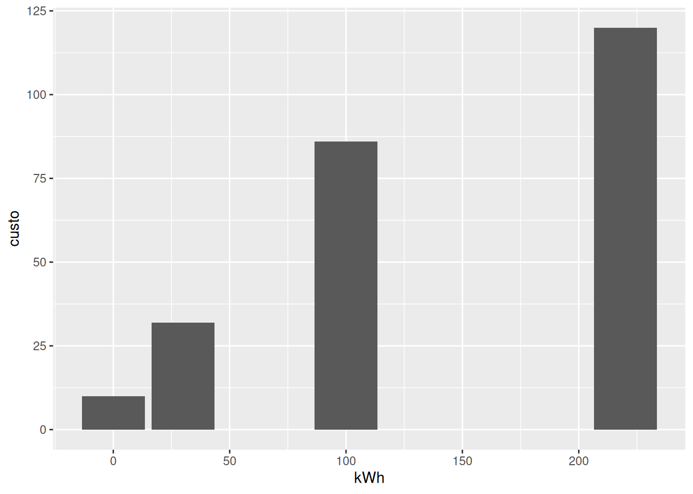
ggplot(data=consumo, aes(x=kWh, y=custo)) +
geom_smooth()`geom_smooth()` using method = 'loess' and formula = 'y ~ x'Warning in simpleLoess(y, x, w, span, degree = degree, parametric = parametric,
: pseudoinverse used at -1.1Warning in simpleLoess(y, x, w, span, degree = degree, parametric = parametric,
: neighborhood radius 101.1Warning in simpleLoess(y, x, w, span, degree = degree, parametric = parametric,
: reciprocal condition number 4.6461e-17Warning in simpleLoess(y, x, w, span, degree = degree, parametric = parametric,
: There are other near singularities as well. 36519Warning in predLoess(object$y, object$x, newx = if (is.null(newdata)) object$x
else if (is.data.frame(newdata))
as.matrix(model.frame(delete.response(terms(object)), : pseudoinverse used at
-1.1Warning in predLoess(object$y, object$x, newx = if (is.null(newdata)) object$x
else if (is.data.frame(newdata))
as.matrix(model.frame(delete.response(terms(object)), : neighborhood radius
101.1Warning in predLoess(object$y, object$x, newx = if (is.null(newdata)) object$x
else if (is.data.frame(newdata))
as.matrix(model.frame(delete.response(terms(object)), : reciprocal condition
number 4.6461e-17Warning in predLoess(object$y, object$x, newx = if (is.null(newdata)) object$x
else if (is.data.frame(newdata))
as.matrix(model.frame(delete.response(terms(object)), : There are other near
singularities as well. 36519 Como mencionado, o
ggplot2 trabalha sobrepondo camadas. Que tal então um gráfico como o de cima, mas com a linha de tendência sobreposta aos pontos ?ggplot(data=consumo, aes(x=kWh, y=custo)) +
geom_smooth()+
geom_point()`geom_smooth()` using method = 'loess' and formula = 'y ~ x'Warning in simpleLoess(y, x, w, span, degree = degree, parametric = parametric,
: pseudoinverse used at -1.1Warning in simpleLoess(y, x, w, span, degree = degree, parametric = parametric,
: neighborhood radius 101.1Warning in simpleLoess(y, x, w, span, degree = degree, parametric = parametric,
: reciprocal condition number 4.6461e-17Warning in simpleLoess(y, x, w, span, degree = degree, parametric = parametric,
: There are other near singularities as well. 36519Warning in predLoess(object$y, object$x, newx = if (is.null(newdata)) object$x
else if (is.data.frame(newdata))
as.matrix(model.frame(delete.response(terms(object)), : pseudoinverse used at
-1.1Warning in predLoess(object$y, object$x, newx = if (is.null(newdata)) object$x
else if (is.data.frame(newdata))
as.matrix(model.frame(delete.response(terms(object)), : neighborhood radius
101.1Warning in predLoess(object$y, object$x, newx = if (is.null(newdata)) object$x
else if (is.data.frame(newdata))
as.matrix(model.frame(delete.response(terms(object)), : reciprocal condition
number 4.6461e-17Warning in predLoess(object$y, object$x, newx = if (is.null(newdata)) object$x
else if (is.data.frame(newdata))
as.matrix(model.frame(delete.response(terms(object)), : There are other near
singularities as well. 36519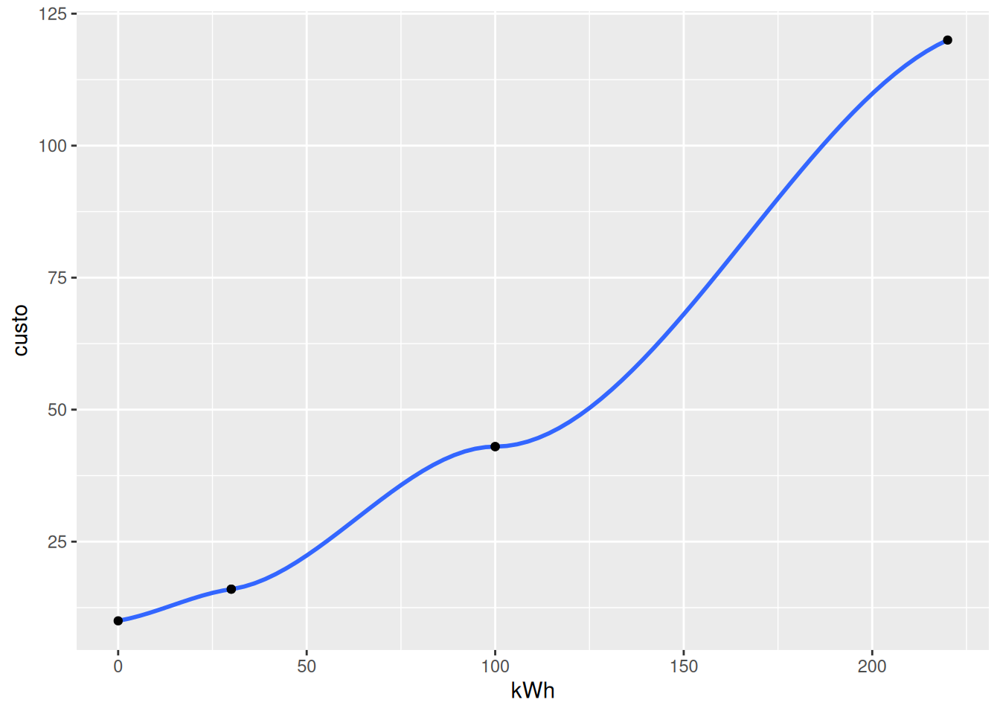
Oferecendo elegância ao gráfico
Bom, seguindo-se os ítens de construção do gráfico pelo
ggplot2, agora é hora de “botar” elegância no produto ! Pra isso pode-se escolher algumas “estéticas” de cor (color), tamanho (size), translucidez (alpha), forma (shape), preenchimento do símbolo (fill) e sua espessura do tracejado do símbolo (stroke), e inseri-las como argumentos do geoma. Veja um exemplo:ggplot(data=consumo, aes(x=kWh, y=custo)) +
geom_point(color= "blue",
size=5, # tamanho do símbolo
alpha = 0.5, # transparência (0 a 1)
shape = 21, # tipo do símbolo
fill = "green", # preenchimento (só vale pra tipos vazios, obviamente)
stroke = 2) # espessura do tracejado do símbolo Bonito, não ? Ou doido, mesmo !
Agora que melhoramos (…ou pioramos) o aspecto visual do gráfico, que tal dar um jeito nas etiquetas dos eixos (labels) ? Veja que estão com as abreviações das colunas x e y dos dados. Quem sabe algo com mais empáfia, então ?
ggplot(data=consumo, aes(x=kWh, y=custo)) +
geom_point(color= "blue", size=5, alpha = 0.5, shape = 21, fill = "green", stroke = 2) +
labs(x = "consumo energético (kWh)",
y = "custo operacional (R$)")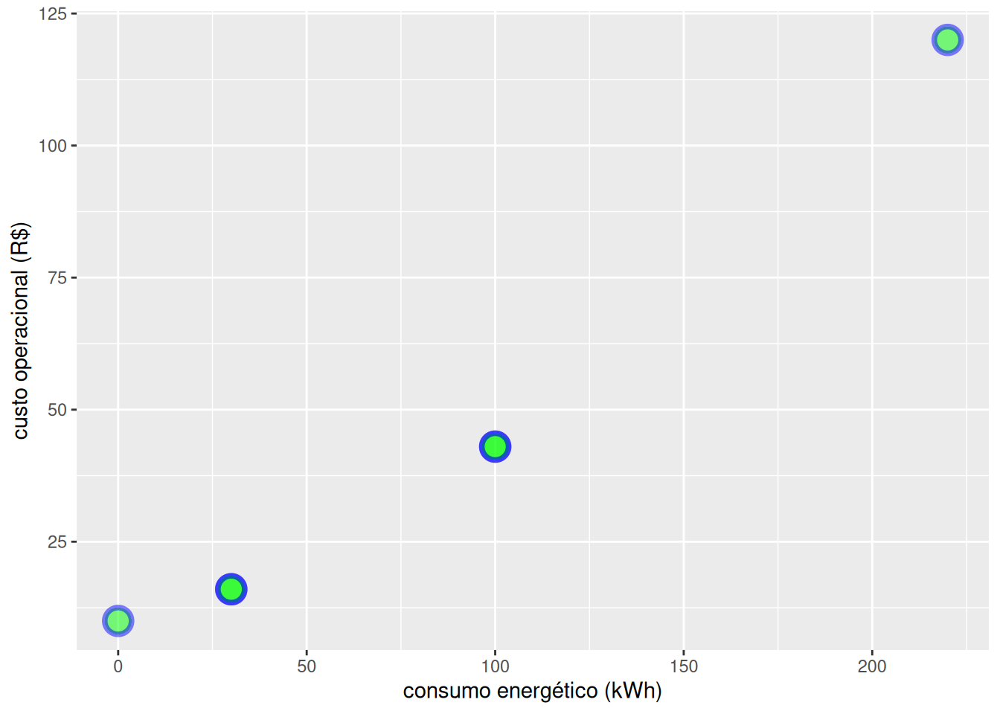
Colocando títulos e subtítulos
Observe que tanto faz colocar as características dos pontos com identação, uma abaixo da outra, ou em linha, mesmo. A única diferença é que colocando uma abaixo da outra visualiza-se melhor o que se pretende fazer. Isso faz parte das “boas práticas de programação”.
Essa função labs permite também se colocar título, subtítulo, e uma observação (caption) no gráfico, veja:
ggplot(data=consumo, aes(x=kWh, y=custo, col = "red", size = 5, alpha = 0.5)) +
geom_point(color= "blue", size=5, alpha = 0.5, shape = 21, fill = "green", stroke = 2) +
labs(x = "kWh",
y = "custo, R$",
title = "Relação entre o consumo energértico e os custos envolvidos",
subtitle = "Companhia Elétrica XYZ",
caption = "Obs: Linha de tendência")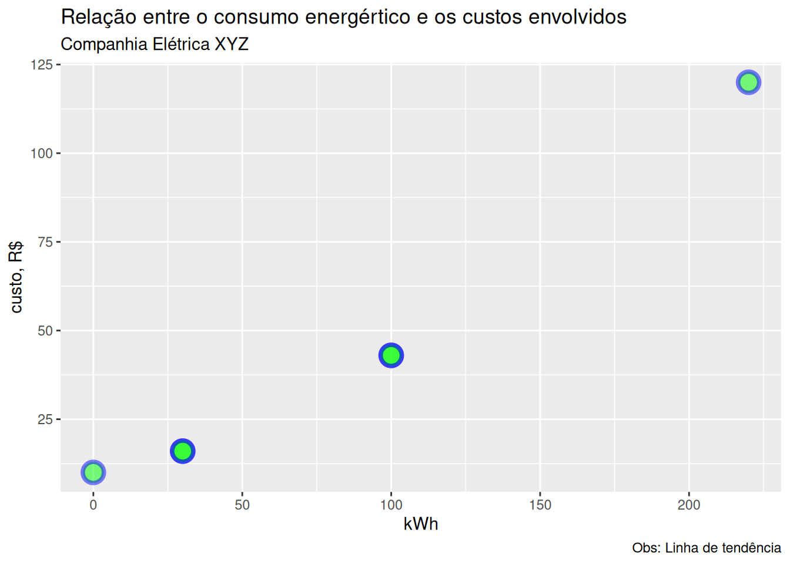
Mudando a aparência de fundo
O
ggplot2 apresenta como padrão esse canvas acizentado. Mas existem vários outros, bastando-se definir um tema (theme) ao gráfico:ggplot(data=consumo, aes(x=kWh, y=custo, col = "red", size = 5, alpha = 0.5)) +
geom_point(color= "blue", size=5, alpha = 0.5, shape = 21, fill = "green", stroke = 2) +
labs(x = "kWh",
y = "custo") +
theme_bw() Teste outros temas, como segue:
ggplot(data=consumo, aes(x=kWh, y=custo, col = "red", size = 5, alpha = 0.5)) +
geom_point(color= "blue", size=5, alpha = 0.5, shape = 21, fill = "green", stroke = 2) +
labs(x = "kWh",
y = "custo") +
theme_classic()ggplot(data=consumo, aes(x=kWh, y=custo, col = "red", size = 5, alpha = 0.5)) +
geom_point(color= "blue", size=5, alpha = 0.5, shape = 21, fill = "green", stroke = 2) +
labs(x = "kWh",
y = "custo") +
theme_linedraw()Salvando o gráfico
Agora, pra se guardar esse gráfico, um tanto trabalhoso, convenhamos, o
R permite o salvamento em diversos formatos, como JPG, BMP, TIFF, PDF, PNG, EPS, por exemplo. Dois jeitos de salvar o gráfico: um se dá pelo menu de Plots do canto inferior esquerdo do RStudio (Plots –> Export). Se quisermos o armazenamento por linha de comando, por outro lado, basta utilizar a função ggsave logo após a criação do gráfico.ggplot(data=consumo, aes(x=kWh, y=custo, col = "red", size = 5, alpha = 0.5)) +
geom_point(color= "blue", size=5, alpha = 0.5, shape = 21, fill = "green", stroke = 2) +
labs(x = "kWh",
y = "custo") +
theme_bw(base_size = 14) +
geom_smooth(method = 'lm', formula = y ~ poly(x, 2), linewidth = 0.5, color = "orange", se = FALSE, show.legend = FALSE)Warning: Using `size` aesthetic for lines was deprecated in ggplot2 3.4.0.
ℹ Please use `linewidth` instead.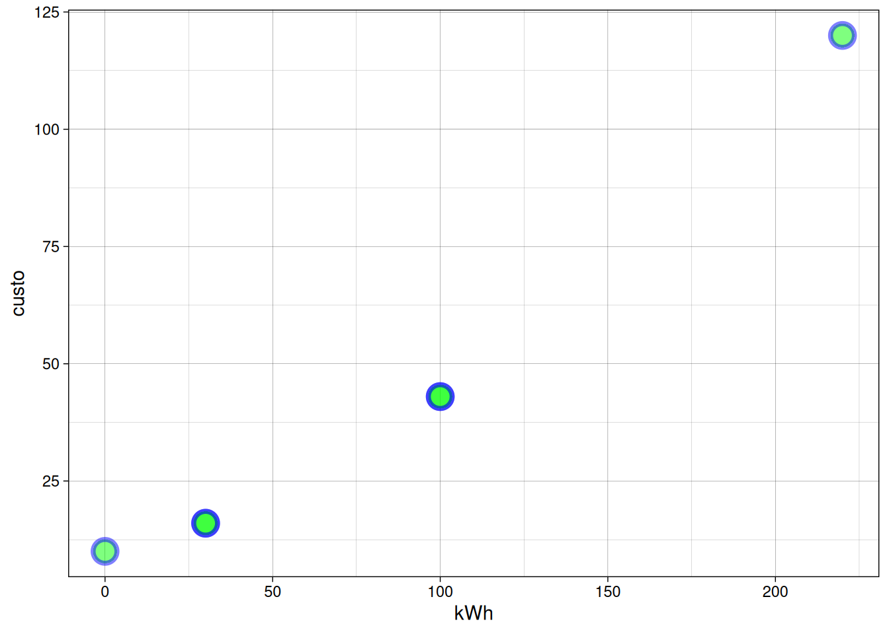
# Salvando o gráfico...
ggsave(filename = "plot.consumo.png", dpi = 300, width = 4, height = 5) Se você não especificou onde salvar o gráfico, veja no diretório raiz do computador. Explicando brevemente a função,
dpi representa a resolução do gráfico (dots per inch), enquanto que width e height especificam o tamanho. Mas também dá pra salvar o gráfico sem qualquer especificação. Exemplificando pra um arquivo PDF:
ggsave(filename = "plot.consumo.pdf")Saving 7 x 5 in imageSimplificando a construção de um gráfico
Bom, ainda que o gráfico acima tenha um certo ar de sofisticação, não é sempre que se deseja isso. Na maior parte das vezes, o que se quer é plotar os dados e observar alguma tendência. E, pra isso, não é necessário todas essas camadas, funções e argumentos. Para se plotar algo “parecido” com o gráfico acima, mas sem toda essa pompa, basta fazermos:
ggplot(data=consumo, aes(x=kWh, y=custo)) +
geom_point() +
geom_line()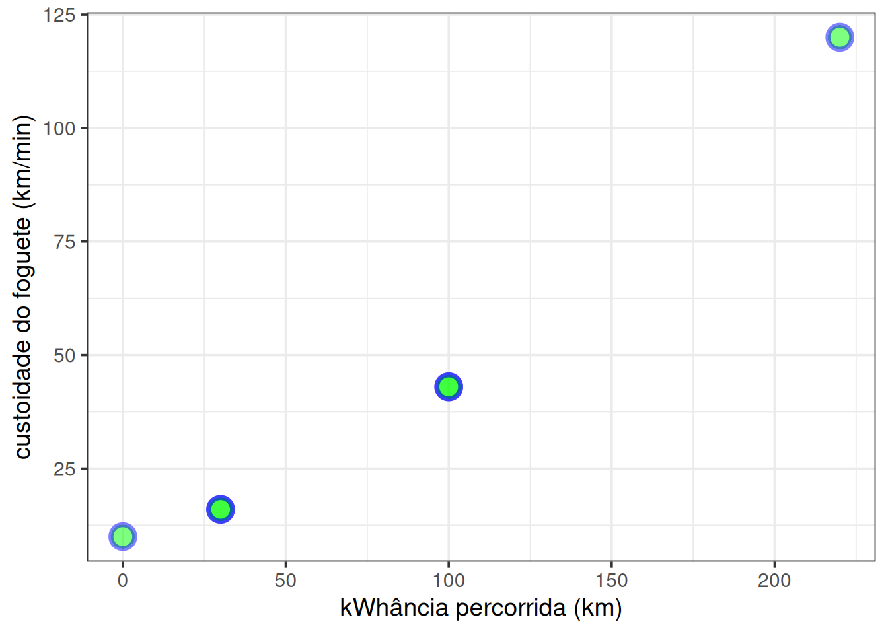
Elaborando um gráfico apenas com vetores
O pacote
ggplot2 é normalmente empregado para a criação de de gráficos a partir de um dataset (dados tal como apresentados numa planilha). Não obstante, é possível produzir também um gráfico apenas com vetores. Para isso, basta substituir o conjunto de dados com…digamos…nada (data = NULL) !! Tal como segue:x <- 1:360
y = sin(x)
library(ggplot2)
ggplot( data = NULL ,
mapping = aes( x = x , y = y ) ) +
geom_line() +
geom_point(shape = 15, col = "red", size = 0.5)+
labs(x="eixo x", y="eixo y") +
coord_cartesian(xlim=c(45,90)) 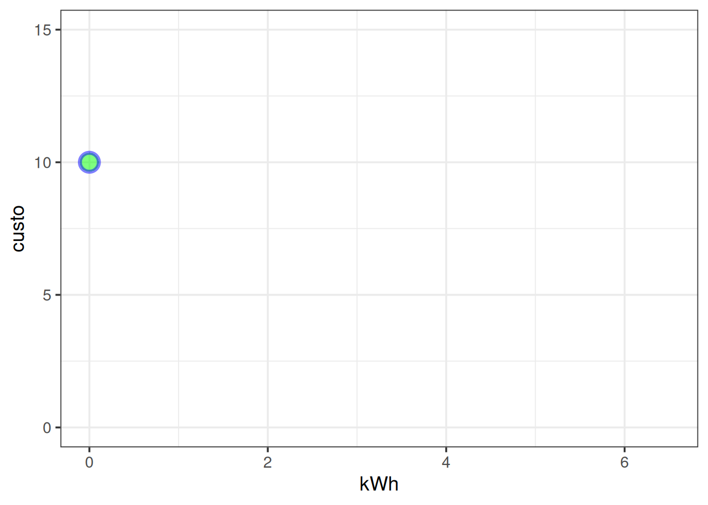
Simulação & função em ggplot2
Assim como o pacote
graphics, o ggplot2 possui também uma função para a produção de tendências por equações introduzidas, geom_function.Exemplificando:
require(ggplot2)
ggplot(data.frame(x = 1:100), aes(x)) +
geom_function(fun=function(x) 173*x/(6+x), colour = "red")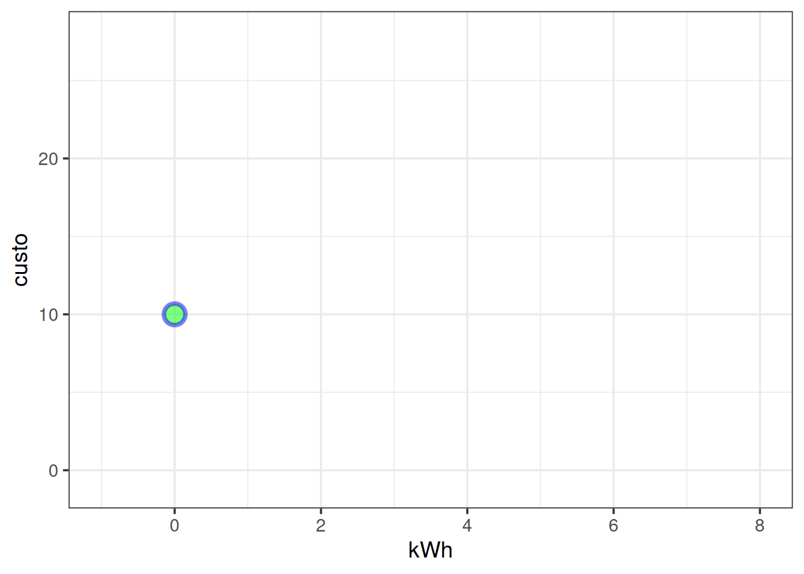
ggplot2 (quase) sem dor: interfaces gráficas na web
Se você chegou até aqui é porque teve alguma afinidade com o sistema gráfico em camadas do
ggplot2, embora o enriquecimento de um gráfico também carregue consigo um conjunto mais extenso de linhas de comando. Para contornar essa dificuldade, alguns desenvolvedores produziram aplicativos de acesso online para o
ggplot2, e que permitem a construção das camadas gráficas sem a necessidade de digitação de comandos, e sim por uso de cliques de mouse. Outra característica interessante, é que esses aplicativos fornecem o trecho de código para a reprodução do gráfico criado por mouse clicks. Assim, vale a pena dar uma olhada nos aplicativos que seguem:
O aplicativo ggplotgui
O ggplotgui envolve um pacote que renderiza uma interface gráfica e interativa para o
ggplot2.
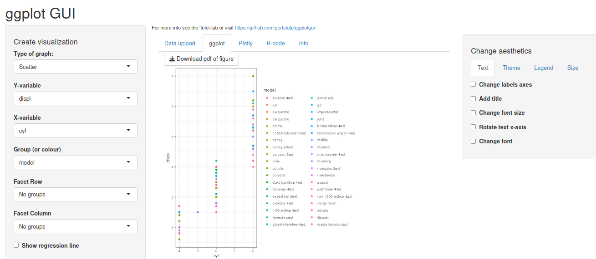
ggplotgui para elaboração de gráficos pelo ggplot2 por cliques de mouse.O aplicativo ggplot2-shiny
Outro sistema interativo e facilitado para o
ggplot2 envolve um framework extremamente interativo chamado shiny. A interface ggplot2-shiny também permite, como o ggplotgui, a construção e customização de gráficos do pacote ggplot2 sem a necessidade de digitação de comandos.
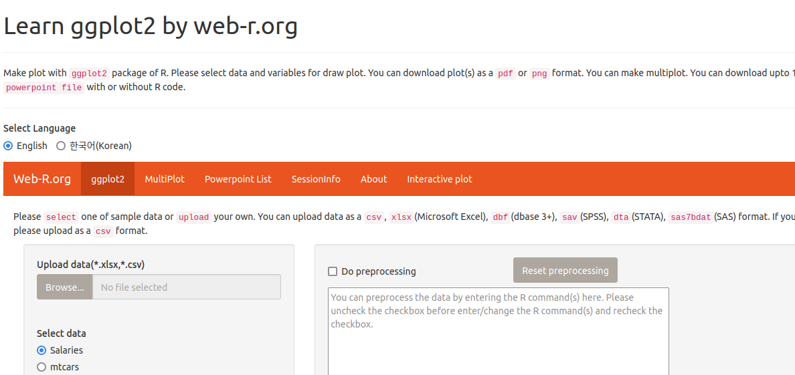
ggplot2 sem o uso de linhas de comando.